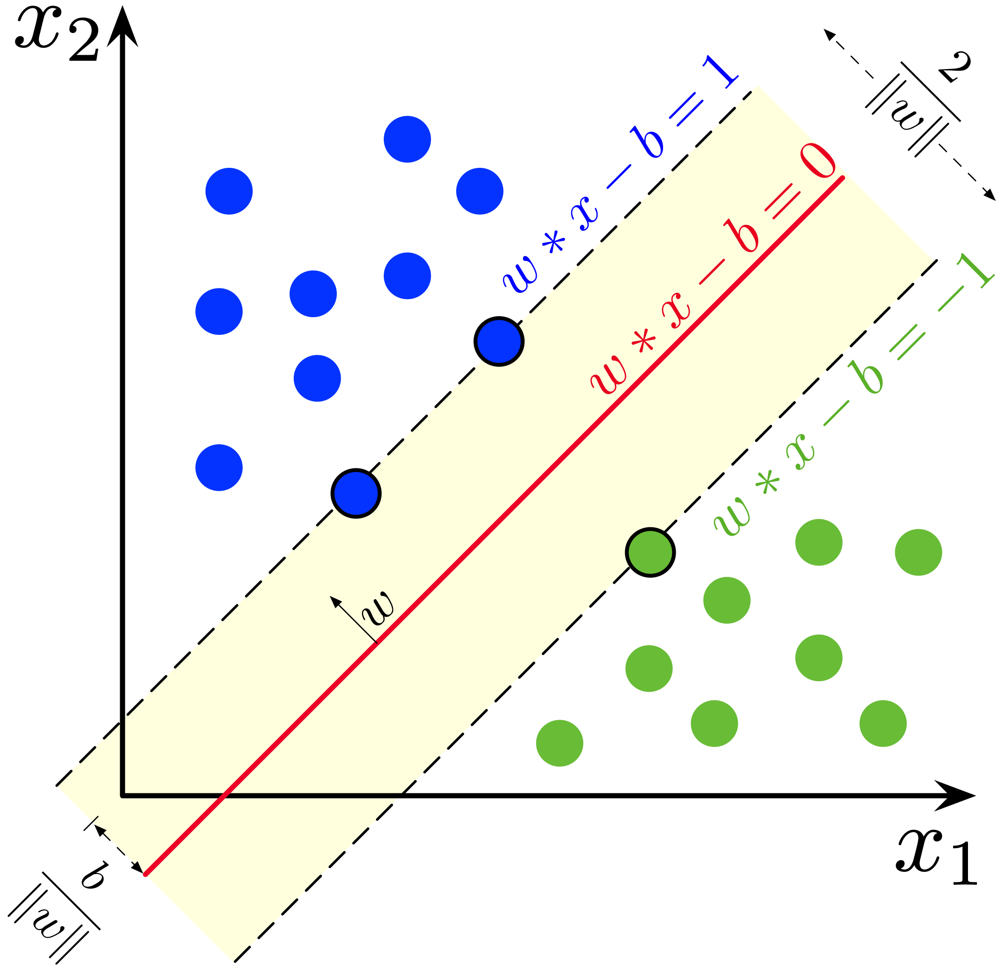
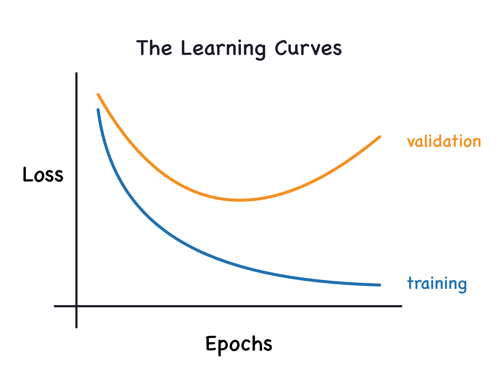
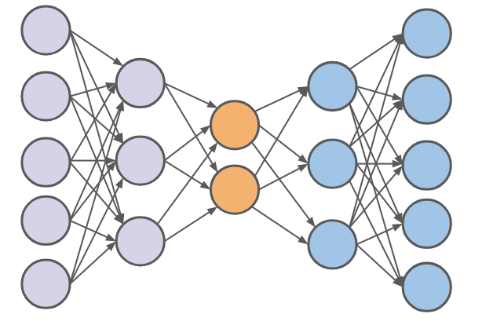
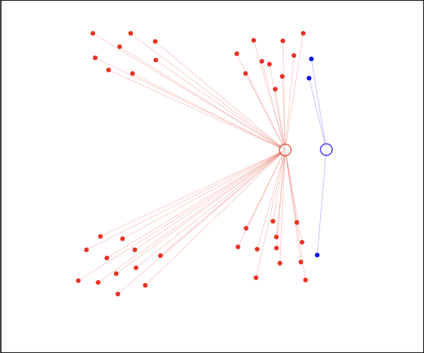
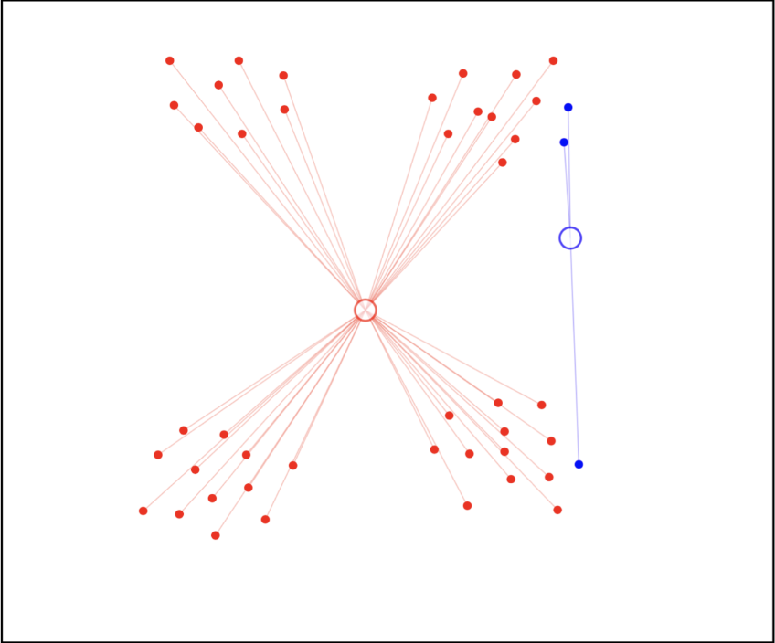
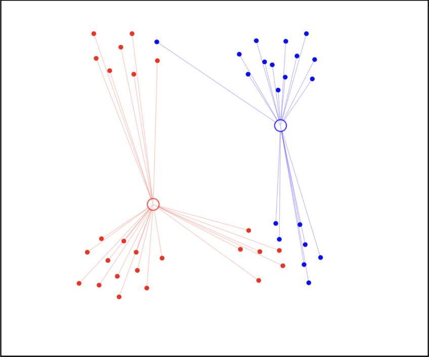
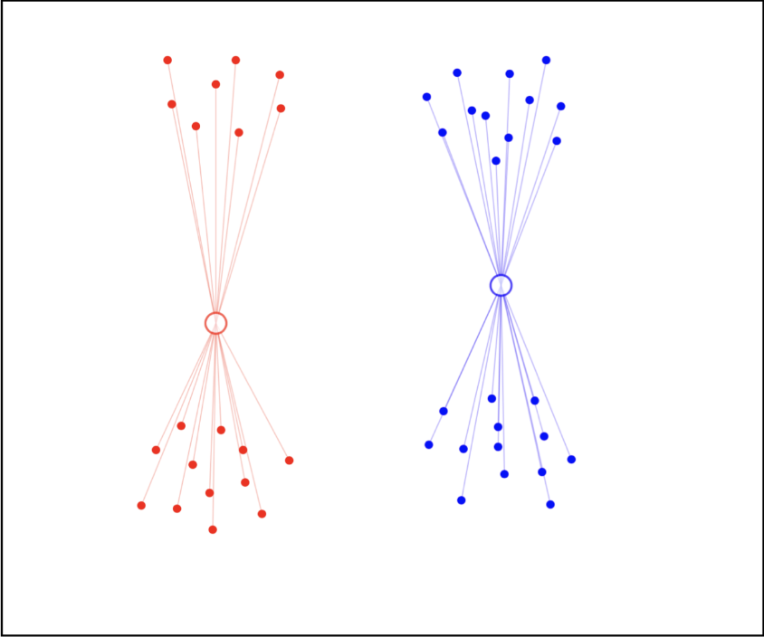
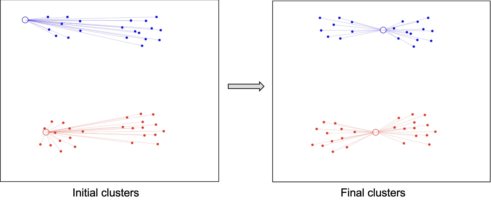
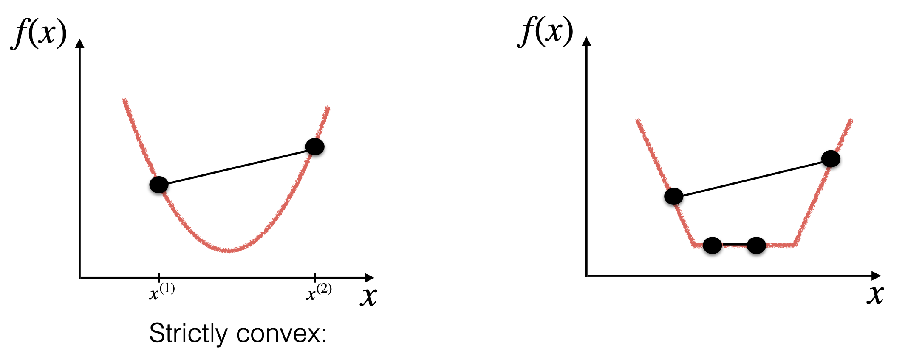

机器学习书：以高中数学视角
项目还在早期阶段，内容目前还不完整且没有经过完整检查与审核，可能存在错误。可能包含部分私有内容，如有侵权请联系作者。
本内容可以在 mlbook.dev 与 GitHub 获取。
谨以此书，献给我的大学三年。
by KevinZonda

而在这里将更关注于机器学习中基础的数学和理论。相信学完，你可以获得对机器学习有基础理解。当然，在这个模块中，读者并不期望拥有高深的数学知识，只期望你能够理解以及能够运用高中数学知识。
本读物核心框架基于英国伯明翰大学本科课程 LC Artificial Intelligence 1 (06 34238)、LI Artificial Intelligence 2 (06 34255)、LH Machine Learning (06 38965)、LH Neural Computation (06 32167) 得来。内容并不完全重合。
由于整本书关联于伯明翰课程，因此我们也为方便伯明翰计算机科学本科与硕士学生，增加了如下标签：
其中蓝色与LC指本科第一年课程。绿色与LI指本科第二年课程。红色与LH指本科第三年课程。对于硕士级别课程 LM，其需要学习全部等级的内容（取决于你是 ACS 还是 CS）。
感谢列表
- @PassingWang：审阅者（可读性）、贡献者
- @George-Miao：审阅者（数学）
- @LaoshuBaby：审阅者（可读性，数学）、校对者、构建者
符号表
不同的人有不同的符号标记，而在这节中，我们将会介绍本读物一些常见的符号标记。
基础运算
| 符号 | 含义 | 符号 | 含义 |
|---|---|---|---|
| 连加 | 连乘 | ||
| 最大值 | 最小值 | ||
| 最大值的参数 | 最小值的参数 | ||
| 自然对数（通常底数为 ） | 自然对数 | ||
| 指数函数 | 开方 | ||
| 分数 | 绝对值 | ||
| 无穷 | 自然常数 |
集合
| 符号 | 含义 | 符号 | 含义 |
|---|---|---|---|
| 实数集 | 自然数集 | ||
| 整数集 | 有理数集 | ||
| 正实数集 | 正自然数集 | ||
| 由 个属于 空间的元素组成的向量 | |||
| 属于 | 不属于 | ||
| 子集 | 真子集 | ||
| 并集 | 交集 | ||
| 空集 | 集合的基数（集合的长度） |
条件与逻辑
| 符号 | 含义 | 符号 | 含义 |
|---|---|---|---|
| 对于所有 | 存在 | ||
| 可以推导出（充分条件） | / | 等价（充要条件） |
导数
| 符号 | 含义 | 符号 | 含义 |
|---|---|---|---|
| 函数 对 的导数 | 函数 对 的二阶导数 | ||
| 对 求 的偏导数 | |||
| 函数 位于 的梯度 | 函数 位于 的海森矩阵 |
线性代数
| 符号 | 含义 | 符号 | 含义 |
|---|---|---|---|
| 实数 | 矩阵 | ||
| 向量 | 矩阵 的第 行 | ||
| 向量 的第 个元素 | 矩阵 第 行 第 列的元素 | ||
| / | 第 个向量 / 实数 | 矩阵 第 列 | |
| 向量 的模（几何长度） | 向量 的范数（向量的模长是L2范数，即 ） | ||
| 向量 的转置 | 矩阵 的转置 |
概率
| 符号 | 含义 | 符号 | 含义 |
|---|---|---|---|
| 事件 的概率 | 在事件 发生的条件下，事件 发生的概率 | ||
| 事件 和 同时发生的概率 | 事件 和 至少有一个发生的概率 | ||
| 事件 和 同时发生的概率 | |||
| 随机变量 的期望 | 随机变量 的方差 | ||
| 标准差 | 方差 | ||
| 均值 | |||
| 随机变量 服从概率分布 | 正态分布 | ||
| 随机误差 |
机器学习中的特定缩写
| 缩写 | 含义 | 缩写 | 含义 |
|---|---|---|---|
| 数据集 | 输入空间 | ||
| 输出空间 | 隐空间/特征空间 | ||
| 权重 | 输入数据 | ||
| 输出数据 | 预测数据 | ||
| 函数 | 通常表示假说函数 | ||
| 学习率 |
缩写
| 缩写 | 含义 | 缩写 | 含义 |
|---|---|---|---|
| subject to | 换句话说 | ||
| with respect to/关于 | 例如 | ||
| independent and identically distributed/独立且同分布 |
Chapter 1
机器学习基础
高中数学回顾
在这一节，我们将解释为接下来学习机器所需要的基础数学概念。你可以尝试先跳过这一节，在遇到不会的数学概念，再回头看看，或许可以达到更好的效果。这一节中所讲的均为中国高中通常会介绍的内容。你无需担心如果你不是理科生而可能少学了些数学而难以前进，因为我们将只依赖如下几点：
- 求和
- 求积
- 导数
- 对数（的基础概念和运算）和
- 函数的基本定义
我会在依赖以上知识点的情况下完善机器学习所需要的数学。
求和
连续求和我们通常使用 来表示，例如：
下侧的 表示求和的起始位置，上侧的 表示求和的终止位置。在这个例子中，我们将 从 求和到 。
求积
连续求积我们通常使用 来表示，例如：
和求和运算类似， 下侧的 表示求积的起始位置，上侧的 表示求积的终止位置。在这个例子中，我们将 从 连乘到 。
导数
导数使用 表达，导数的函数值就是函数图像在这一点的切线斜率。对于一元函数，也就是微分和微元的比值，用符号语言表达就是 。二阶导数表达为 或 ，也就是导数的导数。
对数
对数常使用 ，作为标记。在机器学习中，我们可能会将 与 等混淆，但是不用担心，我们 通常只是想方便计算。
我们知道的一些对数运算的基础公式：
其中最有重要的是 。其揭示了对数运算最重要的性质：对数可以使乘法转化为加法。
因此如果我们考虑我们需要连续乘 次乘数 ，其中 表示不同的乘子，我们可以使用 来简化计算：
乘法运算对于计算机是很慢的，而加法运算是很快的。因此我们可以使用对数来简化计算。
于此同时更重要的是在计算多次概率 的乘积时，其结果可能是一个非常非常小的数（考虑 ，而计算机在存储小数时，可能会有精度丢失（也就是会不准确），而越小的数，精度可能丢失的越快。我们称这种问题为下溢出（underflow）。考虑对数可以将小数相乘转化为相加，从而避免了下溢出的问题 。
函数的基本定义
在初中和高中，我们对于函数的定义：函数是对空间中的元素进行映射（mapping）。
如果我们定义输入空间为 ，输出空间为 ，我们可以将函数 看作是一个对 到 的映射，用符号我们记做 。
举个例子，对于普通的一元一次线性函数 ，我们可以将其看作是将输入空间（即定义域， ）中的元素映射到输出空间（即值域， ）中的元素。因此可以记作 。
在机器学习中，我们通常将函数看作是一个模型，即我们希望找到一个函数 ，使得 能够将输入空间 中的元素正确映射到输出空间 中的元素。
向量和矩阵
这一节我们将会讨论向量和矩阵的基础概念，这些概念在机器学习中是非常重要的。
向量 Vector
高中中，可能不少同学已经接触过向量的概念，不过我们还是简单的复习一下。
向量在数学中表示一个有方向和大小的量，通常在坐标系用一个箭头表示，箭头的长度表示向量的大小，箭头的方向表示向量的方向。与向量相对应的是标量，标量是只有大小而没有方向的量。
对于一个 维的向量 其形式为：
在机器学习中，我们通常认为向量是一个列向量，即是竖着的向量，而不是横着的。
向量的长度被定义为几何距离，即每一个维度的平方和的平方根：
向量运算
向量的基础运算包括：
- 向量的加法
- 向量的减法
- 向量的乘法
向量的加法
向量的加法是指两个向量的对应元素相加，即：
向量的减法
向量的减法是指两个向量的对应元素相减，即：
向量的乘法
向量的乘法是一个复杂的系统我们可以将其分为很多种情况。
向量的数乘：标量与向量的乘法是将标量与向量的每一个元素相乘，即：
向量的点乘（Dot Product）：又叫内积（inner product）。点乘是指两个向量对应元素相乘再相加，即：
向量的点乘有一个重要的性质，即：
其中 为两个向量之间的夹角。
向量的转置（Transpose）
看到转置这个词，你可能会很困惑，不过不用担心，这个概念很简单。
简单来说，转置是将整个向量逆时针旋转 90 度。
对于向量的转置，对于向量来说就是将一个行向量转换为列向量，或者将一个列向量转换为行向量。即：
因此我们有一个非常良好的性质：
即转置的转置等于原向量。
我们通常使用转置来表示向量的点乘，即：
矩阵 Matrix
如果你已经掌握了向量的知识，那么矩阵就是一个非常简单的概念了。
矩阵是很多向量的集合，其表示为：
我们通常使用大写字母来表示矩阵。
矩阵的大小通常表示为 ，即有 行 列。因此我们也可以认为 维向量是一个 的矩阵。
方阵是指行数和列数相等的矩阵，即 。
矩阵运算
转置 Transpose
矩阵的转置和向量的转置类似，即将矩阵的行和列互换：
转置会让一个 的矩阵变为一个 的矩阵。其中，原本位于 行 列的元素，会在转置后位于 行 列。
和向量一样，矩阵的转置也有 。
矩阵的加法和减法
矩阵的加法和减法是指两个矩阵的对应元素相加或相减。因此两个矩阵必须有相同的大小。考虑两个矩阵 和 ，其大小均为 ，则：
减法同理。
矩阵的数乘
矩阵的数乘是指一个标量与矩阵的每一个元素相乘。考虑一个矩阵 ，其大小为 ，标量为 则：
矩阵的乘法（点积）
矩阵的乘法是一个比较复杂的运算，其的运算规则被作者称为横平竖直。
考虑两个矩阵 和 ，其大小分别为 和 ，则其乘积 的大小为 。
矩阵的乘法的规则是：
我们可以改写成：
上文描述了内积中的规则，即 的矩阵和 的矩阵相乘得到一个 的矩阵。记作 。
如果我们将向量看作一个 的矩阵，则如果想使用和矩阵一致的乘法规则，则需要使得将原来 的运算其转化为 ，最终会得到一个 的矩阵，即一个标量。而这个对于第一个乘子，我们就需要使用转置，即 。这也是为什么我们使用 来表示向量的点乘。
从导数到偏导数
导数
我们在高中了解过 表示 的导数。导数是函数在某一点的切线斜率，也可以理解为函数的变化率。
对于导数 我们也可以认为其是函数 相对于自变量 的变化率，因此可以写成：
偏导数
但是如果我们的函数拥有多个自变量会怎么样呢？例如：
在此情况，如果我们需要考虑 的变化率，我们需要将 和 视为常数，然后对 求导。因此我们引入了偏导数的概念。
偏导数是多元函数在其他自变量固定的情况下，一个自变量的变化率。因此偏导数的计算方法与导数类似，只是需要将其它变量视为常数。
我们假设需要求解上文中的 相对于 的偏导数，我们可以将 和 视为常数，然后对 求导：
某点的偏导数可以解释为该点处函数图像的切线斜率在对应方向的分量，如对于三元函数 关于自变量 的偏导数记作 ，简记为 。对于一元函数，其偏导数 就是导数 。
在关于自变量 偏导数的计算中，我们只需将其它变量视为常数，然后按照一元函数求导方法进行求导即可。此外，一元函数求导的一些规则（如链式法则）同样适用于偏导数。
算子（梯度）
Nabla 算子 （又叫倒三角算符，三角算子等）是我们在机器学习中常用的运算符。其是一个包含关于所有自变量偏导数的向量。
Nabla 算子听上去很抽象，实际上也很抽象。我们还是考虑上文中的函数 ，其拥有三个自变量 ，我们可以将其 表示为：
这里使用了转置符号 ，表示将行向量转换为列向量。
由于机器学习经常将多个变量表现为向量 。如果考虑函数 为多变量函数，我们希望其对于向量 的偏导数，我们可以得到：
由于其包含了相对于所有自变量的偏导数，因此我们也称其为梯度（与一元情况的斜率类似）。
更多的数学：概率
你可以暂时跳过这章，这可能涉及一点超出高中的表达，不过我们依然建议你尝试阅读和学习它。
在未来遇到的时候，我们会再次提及这段知识。
机器学习问题定义
graph LR
H[假说<br>Hypothesis]
L[损失函数<br>Loss Function]
O[优化算法（学习算法）<br>Optimisation Algorithm]
Tr[(训练集<br>Training Set)]
Te[(测试集<br>Testing Set)]
F[最终假说<br>Final Hypothesis]
Tr --> O
Te -- 测试 --> F
H --> L
L --> O
O -- 训练 --> F
通常来说对于任何问题，我们想要使用机器学习去解决它时，我们会遵循定义以下内容：
首先，先需要选择一个假说（hypothesis）（或者模型），这个假说是我们认为能够解决问题的一个函数。这个函数的输入是我们的特征（features），输出是我们的目标变量（target variable）。我们的目标是找到一个函数，使得这个函数能够最好地拟合我们的数据。
而为了使这个假说能够拟合数据，我们需要定义一个损失函数（loss function），这个损失函数能够衡量我们的假说在训练集上的表现。越高的损失代表我们的模型错的越多，因此我们的目标是最小化这个损失函数。
损失函数又叫成本函数（cost function），目标函数（objective function）或者误差函数（error function）。我们通常使用 、 或 表示这个函数。对于不同任务我们通常会定义不同的损失函数，比如对于回归任务我们通常使用均方误差（Mean Squared Error，MSE）作为损失函数，对于分类任务我们通常使用交叉熵（Cross Entropy）作为损失函数。
在机器学习中，我们通常使用一些手段来最小化损失函数。我们称呼这些手段为优化（Optimisation）。优化的目标是找到一个参数集合，使得损失函数最小化。我们通常使用梯度下降（Gradient Descent）来优化损失函数。而优化的过程，也是在让模型学习数据集的过程，我们称之为训练（Training）。
而在训练中，我们使用的材料和数据我们称之为训练集（Training Set）。训练集是一个广泛的概念，不同的模型使用不同的训练集。
在训练完成后，我们还会使用一些材料用于测试模型在未见过的数据的性能，而这个过程被称为测试（Testing），而测试中所使用的数据被称为测试集（Testing Set）。
我们统称所有用到的数据为数据集（Dataset）。
通常来说我们数据集中无论是训练集和测试集（还是其他集），其内容格式都是相同的。
别担心可能还不知道其中的一些概念，我们会在后面的章节中详细讲解。
不同机器学习种类
机器学习的种类有很多分法，而我将主要介绍从任务和从训练模式的角度介绍不同机器学习的算法。
任务视角
机器学习可以解决不同任务相关的问题，例如我们可以用 ChatGPT 聊天，我们也可以用人工智能去读取医学影像。
但是不同任务我们通常使用不同的模型。我们通常将任务分类为：
- 自然语言处理（NLP）
和语言相关的任务，例如语言翻译（Machine Translate，MT）、情感分析（Sentiment Analysis）等任务。 - 机器视觉（Computer Vision）
和图片、视频相关的任务。例如通过读取图片去区分图中的植物种类等。 - 聚类
- 分类 例如需要将给定的数据点分类成有问题和没问题等。
等等。机器视觉可以解决很多种类的任务。
学习方式
监督学习（Supervised Learning）
监督学习是最常见的学习方法。其为模型提供的数据集的格式为很多对数据点和其相对应我们期望模型的输出。
我们以预测成交房价为例，我们希望通过其所处在的位置，其最初的价格，其区域的平均房价作为输入，预测其最终的成交价格。因此我们需要
输入： 房子所处在的位置，最初的价格，区域平均房价
输出： 最终的成交价格
因此我们的数据对会变成：
在监督学习中，我们总是把模型输入数据和我们期望模型的输出作为一个对（pair）用于训练。而输入数据我们也称之为特性（features），而输出内容我们称之为标签（label）。因此对于给定一个数据，我们给其打标签（labelling）的本质就是我们在给定一些特性，人为为其标注标签。
而一个数据集通常会包含很多对这样的数据。而且每一个数据对有相同的元素个数。
非监督学习（Unsupervised Learning）
非监督学习和监督学习最大的区别是在于其的数据集格式并不相同。每一个数据对不再包含模型的期望输出，即
我们将只将这些数据输入模型，模型通过一些手段学习。
而正因为我们没有给其我们期望的输出，模型需要自行寻找数据内的关系。
因此监督学习和非监督学习也通常会应用在不同的任务。例如非监督学习可以用于训练图像生成网络或者信息压缩网络等。
强化学习（Reinforcement Learning）
2. 线性模型
线性模型假设其假说为一个关于参数 的线性组合，即 ，（别担心，我会在这一节介绍这是个啥）。
我们在这一节将主要关注传统机器学习中的线性模型，包括线性回归、逻辑回归等。这些算法是机器学习中最基础的算法，也是很多其他算法的基础。
线性回归
什么是线性回归
线性回归（Linear Regression）是一个机器学习模型用于完成回归任务。为解释线性回归，我们将其分为两个部分：线性和回归。
[https://simple.wikipedia.org/wiki/Linear_regression#/media/File:Linear_regression.svg]

上图是线性回归的一个演示图。我们可以看到有很多点，和一根线。这根线就是我们的线性回归模型。我们称之为其是我们的假说。而这些点就是我们的数据集。我们的目标是找到一根线，使得这根线可以最好的拟合这些点（或者说，更好地服从数据点的趋势）。而用线去拟合这些点，我们就称之为回归。
而线性（Linear）则是指这个模型是一个线性函数（Linear function），其可以被定义为：
用一维的例子解释，我们可以简易的认为对于输入的每一个特征 ，我们都会有一个权重 ，而我们的线性函数就是将所有的特征乘上对应的权重后相加，再加上一个偏置 。而这个线性函数就是我们的线性回归模型。
即考虑一维线性函数 ，我们可以将其改写为 ，其中 ， 是偏置。而对于多维的情况，我们可以将其改写为 。
如果我们假设 ，并令 则我们可以认为
其中 是一个 维的向量， 是一个 维的向量， 是 的第 个元素， 是 的第 个元素。而 是我们的线性函数，其可以将输入 映射到一个标量值。
表示转置（Transpose）运算。这里的 可以理解为向量 和向量 的点乘，即
阅读 向量和矩阵 节了解更多关于向量的知识。
更严格的定义
向量我们可以认为一个有 个数字的数组，而标量则是一个单独的数字。
我们需要从数据集尝试寻找参数使线性函数能够最好的拟合。我们可以定义数据集为：
即数据集是由 个数据点组成，每个数据点包含一个输入 和一个输出 。而我们的目标是找到一个权重 ，使得我们的线性函数 能够最好的拟合数据集 。
用数学语言来描述，我们假设输入数据是一个 维向量 ，而输出数据是一个标量 。我们可以定义输入空间 为一个 维的实数空间，而输出空间 为一个实数空间。即：
而我们的线性函数 可以被定义为是从输入空间 到输出空间 的一个映射，即：
成本函数
那我们应该如何去寻找到最终最佳的呢？我们需要定义一个函数，叫损失函数。其用于衡量我们的预测值 与真实值 之间的差距。如果我们能通过某些手段最小化这个损失函数，我们也就相当于让模型可以学习到最佳的。这个过程就是我们所说的训练过程。
而线性回归模型的损失应该怎么定义呢？相信聪明的朋友已经知道了！我们可以通过计算预测值与真实值之间的差距来定义损失函数。我们可以考虑 与模型预测的 的距离，即 。
如果我们的模型预测的值与真实值之间的距离越小，那么我们的模型就越好。因此我们可以定义距离函数为这两个点的几何距离，即欧式距离：
其中我们将其转化为平方的形式，是因为平方相比于绝对值更容易求导，而且在求导的时候也不会受到绝对值的影响。
而上述式在最后进行平方根运算，而我们在求导的时候会遇到开方的问题，这会使得我们的求导变得复杂。因此我们可以将其转化为平方的形式，是因为平方相比于开方更容易求导，而且在求导的时候也不会受到开方的影响。而其与几何距离函数有着相同的单调性，这也意味着我们可以通过最小化平方距离 来最小化几何距离。
因此我们可以定义距离函数为：
而考虑上式只考虑了一个样本，而我们的数据集中有多个样本，因此我们需要对所有的样本求平均值以得到平均损失。因此我们可以定义损失函数 为：
因此目前我们尝试寻找一个权重 ，使其最小化成本函数 为了方便后面的数学操作，我们可以将整个函数除以2，这样在后续求导的时候可以消去2，方便计算。而考虑乘上是一个正的常数，不会影响其的单调性与求导，也不会影响最小化这个式子的权重，因此我们可以将目标函数改写为
优化目标函数
在完成问题的定义后，我们的目标转化成了最小化成本函数。在高中数学中，我们可以知道：一个函数的极值点只存在于导数为 0 的点。因此如果我们想获得一个参数使损失函数最小化，我们可以对成本函数求其求导数（更严谨来说，是对于成本函数的参数求偏导）。
在高中我们学习了导数，而偏导数是导数的一种推广。在高中我们学习的导数是函数的变化率。这个函数其实有一个隐式条件，即其只有一个自变量（通常为 ）。
而如果面对有多个自变量的函数（被称为多变量函数），我们需要使用偏导数。偏导数是在将其他的自变量视作常数时，对其中一个自变量求导。我们可以将其理解为在多维空间中的导数。
其运算规则与导数相同，只是在求导的时候，我们需要将其他的自变量视作常数。
可以阅读 从导数到偏导 节了解更多关于向量的知识。
易知该损失函数的极值点是全局最低点，故严格证明暂时略去。
简单来说，对于一个凸函数（convex function），其的全局最小值会出现在其导数为 0 的情况（需要注意的是，凸函数可能会有多个点使其导数为 0，且这些点的函数值均为全局最小值）。而我们的成本函数可以被证明为凸函数，因此我们可以通过对其求导数来获得全局最小值。我们会在后续章节讨论凸函数的性质。
求其极值点。令其偏导值为 0:
通过上述操作，我们可以获得最佳的（星号 表示最佳），这个过程就是我们所说的训练过程。我们可以通过这个过程来训练我们的模型，使得模型可以学习到最佳的，从而可以对未知的数据进行预测。
由于我们可以通过代数直接获得函数的解析解，我们也称其为封闭解（Closed-form solution）。
需要注意的是并不是所有的问题都拥有封闭解，有些问题可能会有多个解，有些问题可能会有无穷个解，有些问题可能会没有解。而应对这种情况，我们会选择使用迭代的方法来求解（我们又称其为优化（Optimisation））。在后续的章节中，我们会介绍如何使用迭代的方法来求解线性回归问题。
矩阵形式
当然，为了方便实际运用，我们可以将整个过程用矩阵形式表达。
我们定义：
因此有：
其中 是原来的损失函数。
因此有：
对其求导：
令导数为 0，我们可以得到：
即：
这就是我们的线性回归矩阵形式的解析解。
梯度下降 Gradient Descent
在上一节，我们通过线性回归了解了基础的监督学习的模型。我们定义了模型，成本函数，并尝试优化成本函数。优化成本函数使得我们的模型能够更好地完成任务（拟合数据）。在这一节，我们将介绍一个常用的优化算法：梯度下降（Gradient Descent）。其是一种更通用的方法用于最小化函数。
1. 梯度下降
初中和高中数学告诉我们，一个函数的斜率（即一阶导数）表示了函数的变化率。如果一个函数的斜率为正，那么函数在这一点上是递增的；如果一个函数的斜率为负，那么函数在这一点上是递减的。
对于函数 ，如果我们在 处有 ，且其是极大值，则我们可以得到：
| 极大值 |
而如果是极小值，则有：
| 极小值 |
梯度下降算法正是利用了这一点，通过不断地迭代，使得函数的值不断地减小。
我们假设我们需要寻找函数 的最小值，并且其的最小值与其的极小值重合。我们对其位于 进行求导。因此我们可以得到三种情况：，，。
我们使用图像来表示这三种情况。其中红线表示函数 ，蓝线表示导数 。
情况 ：

在这种情况下，导数大于 0。如果向右走，则函数的值增大，因此我们需要向左走。
情况 ：

在这种情况下，导数小于 0。如果向左走，则函数的值增大，因此我们需要向右走。
情况 ：
在这种情况，我们已经到达了极值点。
经过上述实验，我们会发现函数极小值方向总是相对于当前位置的导数相反。即如果导数为正，我们需要向左走；如果导数为负，我们需要向右走。因此我们得到了梯度下降的更新公式：
其中 为学习率，其控制了我们每次更新的步长。越大的学习率，我们的步长越大，但是可能会导致我们错过最小值；越小的学习率，我们的步长越小，但是可能会导致我们收敛速度过慢。
如果考虑函数 为多变量函数，我们则需要使用偏导替换导数。因此我们可以得到：
但是考虑我们的参数 可能是一个向量，我们需要对每一个维度进行更新。因此我们可以得到：
我们定义梯度 为：
则我们可以得到最终的更新公式：
疑问
相信看到这的时，你一定有很多困惑。我将先解释几个最常见的问题。
Q: 如果我的函数极值点不是唯一的，梯度下降会怎么样？
梯度下降会收敛到一个局部最小值（即极值点）。这是因为梯度下降是一种贪心算法，其只会考虑当前的梯度，而不会考虑全局的梯度。
而解决的方法通常是一个叫“多次启动”的东西。其的做法是随机初始化参数，然后运行梯度下降。重复这个过程多次，然后选择最小的那个值。
Q: 如果我学到了极大值咋整？
在上述我们还有一种可能就是直接学习学到了 且这个点是 的极大值。这种情况通常建议去买个彩票（x）。使用多次启动可以解决这个问题。
Q：什么情况下梯度下降会失效？
梯度下降的一个前提是函数是可微的。如果函数不可微，梯度下降会失效。另外，如果函数的梯度变化很大，梯度下降也会失效。这种情况下，我们可以使用其他的优化算法，例如 IRLS。
Q：什么情况下梯度下降一定会收敛到最小值？
如果函数是凸函数，梯度下降一定会收敛到最小值。这是因为凸函数的局部最小值就是全局最小值。
（这个答案对欧皇无效）
原理：梯度下降为什么总是能走向最深的点
梯度下降的本质推导来源于泰勒展开。泰勒展开是一个非常重要的数学工具，它可以将一个函数在某一点附近用一个多项式来近似表示。泰勒展开的公式如下：
其将函数在 处使用多阶导数展开，展开的多项式的次数为 。换句话说如果我们一级展开，我们则需要使用 0 阶导数（函数值）和一阶导数（斜率）；如果我们二级展开，我们则需要使用 0 阶导数 （函数值）、一阶导数 （斜率）和二阶导数 （曲率，或者说，导数的导数）以此类推。

上图是对函数 位于 的泰勒展开。其中红线为原函数，紫线为一阶泰勒展开，蓝线为二阶泰勒展开，橙线为三阶泰勒展开，绿线为四阶泰勒展开。我们可以看到，随着泰勒展开的次数增加，展开的多项式越接近原函数。
通过上图，我们也能发现泰勒展开的两个非常有用的性质：
- 当我们需要拟合的点 离展开点 越近，泰勒展开后的结果 越接近原函数的值 。
- 当泰勒展开次数越高，拟合的效果越好。
我们假设 为损失函数，我们认为 为最优权重。我们期望从 达到最优权重 。我们对损失函数 位于 进行一阶泰勒展开，即：
如果我们认为更新后的权重 是 增加一个单位向量 伴有学习率 ，则可以写成
我们可以将上式代入到损失函数的泰勒展开中，得到：
我们可以认为 是损失函数在 处的梯度与更新的方向 的点积。
其中 是 与 的夹角。
考虑单位向量 ，其的膜长为1，即 。因此我们可以得到：
如果假设 的膜长不变，则其的点积越大，说明 越小，也就是说我们的更新方向越接近于梯度的方向。
根据三角函数的定理，我们可以地到 ，其最小值当且仅当 时取到，而其最大值则为 时取到。因此我们可以得到：
我们的目标是使 最小化，也就是说我们希望 最小化。因此我们可以得到结论：当 与 的夹角为180°（即 ）时， 取得最小值。即 与 反向时， 取得最小值。
考虑 为 的反向，且为单位向量我们可以得到：
将其代入至原函数：
考虑 是一个标量，我们可以令 ，则可得：
因此我们可以证明出最终的结论：梯度下降总是能走向最深的点。
拓展：IRLS
如果将泰勒展开展开至二阶，则有
令其导数为0，我们可以得到
即在二阶泰勒展开中，我们认为损失函数 的最低点可以由 得到。而 可以看作是 的更新方向。
因此我们可以定义新的梯度下降函数为
其中 为 Hessian 矩阵， 为 Hessian 矩阵的逆矩阵。
TODO
我们将新的更新公式命名为 IRLS（Iteratively Reweighted Least Squares）算法。其是一种迭代的最小二乘法，其在每次迭代中都会重新计算权重。
线性回归与梯度下降
在 2.1 节，我们定义了线性回归的优化目标为：
在 2.2 节，我们了解了梯度下降：其可以通过函数的一阶导数来更新参数，使得函数值逐渐逼近最小值。因此在这一节，我们可以通过对线性回归的优化目标求导来得到梯度下降的更新公式。
应用梯度下降
我们定义目标函数函数 为：
我们将其带入梯度下降的公式中：
其中 为学习率， 为梯度算子。我们可以通过不断迭代上述公式来更新权重 ，使得目标函数逐渐逼近最小值。
在实际应用中，我们可以通过设置迭代次数或者设置阈值来终止迭代。其代码类似于
const MAX_INTERATION = 1000
w = initWeight()
for (i := 0; i < MAX_INTERATION; i++) {
w = w - eta * gradient(w)
if stopCondition(w) {
break
}
}
逻辑回归
在学习完线性回归后，我们来学习逻辑回归。逻辑回归（Logistic Regression）是一种二元分类（Binary Classification）算法。分类算法故名思议就是将数据分为不同的类别。而二元则是表示分的类别总共由 2 个，我们可以将其命名为正类（Positive）和负类（Negative）。
定义问题
我们定义正类的标签 ，负类的标签 。因此我们可以定义数据集为：
理想情况下我们的模型接受输入一个向量 ，输出一个其所属的分类 。换句话说，我们想要寻找一个模型 。
而对于直接输出一个类别，是很困难的。因此我们可以尝试输出一个概率值，用于表示样本属于正类的概率。这样我们可以通过设置一个阈值来判断样本属于哪个类别。因此我们将问题转化为：寻找一个模型 。
逻辑回归被定义为一个线性模型，线性函数被定义为：
从线性方程获得概率
想从一个线性方程 获得一个概率 需要一些魔法操作，这是因为我们可以认为线性方程接受一个向量 并输出一个实数 ，而概率的定义域为 并不相同。我们需要一些额外操作来实现。
我们假设正类的概率为 ，负类的概率为 。考虑我们只进行二元分类，因此我们可以认为：
我们定义正负比 ，即正概率和负概率的比值为：
我们可以将 转换为对数形式，即 函数：
如果我们将 记为 且令 为 ，则有：
考虑到 函数的定义，其输出值为实数域 （即 ），考虑其和线性模型输出空间一致，因此我们可以把这两个函数的输出进行拼接：
即如果线性函数的输出能学习到 函数的输出，那么我们就可以得到一个概率值。
我们定义下列函数为 Sigmoid 函数：
则我们可以将 表示为：
因此我们可以定义我们最终的模型为：
其中 为 Sigmoid 函数。
这个模型接受一个向量 并输出一个分类为正类的概率值。
定义优化问题
定义完了这个模型该怎么算，我们该想想我们怎么去优化这个函数。对于逻辑回归，我们可以使用一个名为极大似然估计法的技术来优化这个函数。
考虑我们的数据集分为两类，即标签为正的数据集和标签为负的数据集。我们先从标签为正的数据集开始：
考虑这些标签为正，因此我们希望对于所有的标签，我们的模型输出的概率值越大越好。即我们可以尝试最大化所有正标签点的概率：
我们使用 函数来将其转换为求和形式：
考虑这些点 ，而其余点 ，因此我们可以将其改写为：
在此公式，对于所有负标签点 （），其在上式中的项会变成： ，即其对于上述式子并不会有什么影响。
而对于负样本，我们希望其被分类为负类的概率越大越好。而负标签的概率被定义 ，因此我们可以将其改写为：
与正样本类似，我们可以改写当前式为：
和正样本类似，对于正样本点 （），其在上式中的项会变成： ，即其对于上述式子并不会有什么影响。而对于负样本点，其 ，其在计算中的 会变成 ，因此其对于上述式子会有影响。
于是我们可以将优化问题定义为：
由于在机器学习中，我们更擅长最小化问题（我们有梯度下降，可以轻松优化最小化问题），因此我们可以将其转换为最小化问题：
在此我们定义 为损失函数，即：
我们使用梯度下降优化这个损失函数，以获得最佳的参数 ：
伯努利视角
TODO:
非线性变换
在学完线性回归和逻辑回归后你一定会有一个疑问，我们既然定义模型为线性函数，而线性函数中所有的输入特征都是线性的，那么我们如何处理非线性的特征呢？例如我们应该如何用线性模型来拟合一个二次函数呢？
非线性变换可以解决这个问题。
定义
我们可以通过对输入进行一定变换从而使得原本的线性特征变成非线性特征。
我们定义一个变换函数 ，将原本的 维特征转换为 维特征。我们可以将原本的特征 通过 映射到更高维的空间 ，然后使用线性模型拟合 。
最简单的例子是对于输入空间 ，即 ，我们可以定义一个二次变换函数 ，然后使用线性模型拟合 。
通过这种映射，我们可以拟合很多非线性函数。
一些其他的变换例子是：
代价
We take the benefit, we pay the price.
非线性变化允许我们拟合更多的函数，但是也有一些代价。
升高输入维度同样也会导致升高权重的维度。例如
我们原来只需要 3 维的权重，而现在需要 6 维的权重。这会导致更多的计算量。
而最严重的则是权重爆炸。当我们的特征空间变得非常大时，我们的权重也会变得非常大。模型过度复杂会导致过拟合（模型只记住了数据集的点，而不能泛化）。
非侵入性
非线性变换是一种非侵入性的方法。我们可以在不改变原始数据的情况下，通过变换函数 来拟合非线性函数。
因此非线性变化也不会影响我们推导出的公式（包括梯度、封闭解等），我们只是需要将公式内的 替换为 （或 替换为 ）。
例如对于线性回归，我们定义的封闭解公式为：
如果我们应用非线性变化 ，我们因此则有：
支持向量机 Support Vector Machine
支持向量机（Support Vector Machine, SVM）是一种二分类模型，其基本模型是定义在特征空间上的间隔最大的线性分类器，其学习策略便是间隔最大化。SVM 通过间隔最大化，可以使得模型对噪声更加鲁棒，从而提高模型的泛化能力。
和逻辑回归一样，支持向量机是一个二分类模型，且其也是个线性模型，即其分割超平面为 。我们可以将数据集分为两类，一类为正类，一类为负类。
在下面我们将首先讨论线性可分情况下的支持向量机。再介绍线性不可分的情况。
基础想法
我们考虑分类算法，我们只是关注是否所有的数据点被正确分类了，而并不在乎我们到底选择了哪一个（超）平面用于用于分隔数据点。但是支持向量机不仅仅关注分类是否正确，还关注分类的边界。我们希望分类的边界尽可能远离数据点，这样可以使得模型对噪声更加鲁棒，从而提高模型的泛化能力。

[https://en.m.wikipedia.org/wiki/File:SVM_margin.png]
上图是 SVM 的示例图。红色线是我们的假说。蓝色点为正类，绿色点为负类。黄色区域则是由离假说最近的正类和负类点组成的间隔（Margin）。间隔线（虚线）与假说平行，而在间隔线上的数据点，我们称其为支持向量（Support Vector）。我们希望寻找一个假说可以将两个类被正确分开，且能够使这个间隔最大化。
而因此，我们定义了新的假说：
即，如果这个点在超平面的上侧，我们将其分类为正类，否则分类为负类。
点到平面的距离
在一切开始前，我需要先介绍一下点到（超）平面（后简称平面）的距离。
我们定义平面 为 。 并定义点 到平面 的距禽为 。
我们想要知道怎么计算点 到平面 的距离。
取平面任意一点 ，且因为平面上的点满足 ，因此有 。
向量 ，其相对于平面法向量的投影为 ，其中 为 和 的夹角。考虑其投影的几何性质，我们可以得到 。
令法向量 ，有
因此则有：
定义间隔（Margin）
根据上一节，我们可以定义距离公式：
我们定义距离
考虑 ，因此由：
即如果分类正确，，如果分类错误，。考虑 ，即乘上它只会改变 的正负号而不会改变其绝对值，因此如果所有点都被正确分类，我们可以把边距改写为
经过此变换，我们可以得到一个更加简洁的表达式：
定义原问题 Prime Problem
我们的目标是最大化最小的间隔，即我们要先找到最小的间隔 ，然后寻找使其最大的参数 和 。因此我们可以定义原问题为：
即
由于在求最小点的时候，我们固定了 ，因此我们可以把 提出来，即
考虑如果存在 和 能满足超平面。则超平面可以被定义为
如果我们对 和 进行缩放，即 ，，这样我们可以得到
如果我们考虑最小边距的点，即 ，考虑总是存在常量 使得，因此我们可以对平面进行乘 变换，因此有 。而由于最小化的边距被定义为了 ，因此约束条件被改写为
因此我们可以改写原问题为
边界 被定义为 而最大化一个数的倒数等价于最小化这个数的倒数的倒数，即
考虑我们最小化一个绝对值，也就在最小化这个绝对值的平方，因此有：
为了方便之后的求导，我们可以把最小化的平方乘上一个正系数 ，即：
我们对 进行非线性变换，即 ，这样我们可以得到
我们需要优化这个函数
改写为对偶问题 Dual Problem
考虑原问题
由于约束比较复杂，我们难以直接优化。因此我们需要改写原问题以方便优化。
我们可以定义一个惩罚函数 ，当违反约束时，这个惩罚会很大，而当满足约束时，这个惩罚会很小。因此在优化这个整体问题时，我们也在优化惩罚函数，即尽可能符合约束。即我们可以定义把原问题重新写为：
如果我们能将约束转化为上述的 函数，则我们就可以把原问题转化为一个无约束问题。因此我们需要构建惩罚函数 。
惩罚函数
我们首先改写约束条件：
我们可以定义惩罚函数为
在这里，我们称 为拉格朗日乘子。（因为这个方法本质上被称为拉格朗日乘子法）且其：
- 当 不是支持向量，即 ，这个点对于最终的分类没有影响
- 当 是支持向量，即 ，这个点对于最终的分类有影响
当 时，我们称 为支持向量。需要注意的是尽管有可能 在边界上，但是其 仍然可能为 。
我们希望使得所有违反约束的点的惩罚尽可能大，即我们希望最大化这些惩罚，因此我们可以改写惩罚函数为：
我们将惩罚函数带入原问题，我们可以得到：
由于内侧优化 并不会影响到 ，因此可以提出来，即：
根据一些数学推导，我们可以得到最终的优化问题为：
我们将省略上侧这一步的推导，简单来说我们可以将优化看成两部分：
- 最小化
- 最大化
前者可以被轻易证明是凸的（convex），因此其的极小值为全局最小值。 而后者也可以被证明为凹的（concave）。因此其的极大值为全局最大值。
由 Minimax 定理，在此情况下的 是可以进行交换优化的。
即：
求解对偶问题
我们对其进行求导，即
如果损失最小，我们可以得到：
将 和 代入 ，我们可以把优化问题改写为
定义核函数 ，可以把优化问题改写为
预测
原问题的预测是很直觉的，即：
其中 为符号函数，即如果输入为正数，则输出为 ，否则输出为 。
而对偶问题的预测有所不同。由于我们有 ，我们将其带入 ，我们可以得到：
软间隔 Soft Margin：非线性可分情况
SMO 算法
核技巧 Kernel Trick
上一节 SVM，我们定义了 作为核函数。这里我们将在这一节更细节地讨论核技巧。
核方法和核技巧本质上是相同的概念，只是在不同语境下使用的不同术语。
请不要将其和 CNN 中的卷积核混淆。它们是不同的概念。
空间变换
如果简单的去看待核函数，我们可以认为核函数是一个函数，其输入是两个向量，输出是一个标量。即 。
从空间角度来看，其是将两个位于 空间的向量映射到一个新的标量空间 。而我们也称这个新的空间为再生核希尔伯特空间（RKHS）。
通过定义不同的输入空间 和映射函数 ，我们可以得到不同的核函数 。如果我们考虑图片、文本等等空间为 ，如果我们能寻找到一个 或者 ，我们就可以对这些数据进行处理。例如对于自然语言处理领域，我们希望读取文本去进行一些操作，我们可以使用 TF-IDF 核以处理。
总的来说，核函数除了让我们可以处理非线性问题也可以让我们处理不同种类点数据。
Mercer's Condition
直接寻找一个 是一个困难的问题，甚至很多 难以用方程表达出来。但是我们可以通过直接构建 而不去寻找 来解决这个问题。
Mercer's Condition 是一个充分条件，如果一个函数 满足 Mercer's Condition，那么我们可以认为 是一个合法的核函数。因此我们就跳过寻找 的过程，直接寻找 。
其定义为： 考虑所有点 ，令定义函数 的类 Gram 矩阵 为 。我们假设 是有 个元素的集合，那么 是一个 的方阵，即
那么，如果矩阵 是
- 对称的（symmetric），即：
- 或者说 或者说
- 且是半正定的（Positive Semidefinite, PSD）记作
- 即对于任何 ，有
则 是一个合法的核函数。
组合核 Compositional Kernels
TODO
支持向量回归 Support Vector Regression
机器学习实践
这一节我们将讨论机器学习在实际应用中的一些情况与操作，包括划分数据集、过拟合等。
梯度下降的变种
梯度下降被定义为
经典梯度下降通过对数据集所有数据进行遍历，计算梯度并更新参数。即对于整个数据集 的期望，即其：
这种做法在数据集很大的情况下，一次更新需要非常大量的计算。因此，有很多变种的梯度下降算法被提出，以减少计算量。
随机梯度下降（SGD）
随机梯度下降（Stochastic Gradient Descent, SGD）是梯度下降的一种变种。在每次迭代中，随机梯度下降只使用一个样本来计算梯度。这样，每次迭代的计算量大大减少。但是由于只使用一个样本，所以每次下降可能不一定总是指向最优方向。因此，SGD的收敛速度可能会变慢。
我们定义梯度的为：
其中 是从数据集中随机抽取的一个样本。
小批量梯度下降（Mini-batch Gradient Descent）
SGD 因为每次只有一个样本，所以训练抖动很大。而传统梯度下降因为每次都要计算整个数据集，所以计算量很大。我们提出一个折中的方案：小批量梯度下降（Mini-batch Gradient Descent）。即每次迭代使用一个小批量的样本来计算梯度。这样，每次迭代的计算量虽然比SGD要大，但比传统梯度下降要小。而且小批量梯度下降的收敛速度通常比SGD要快。
我们定义每次采样 个样本作为一个batch ，梯度为因此被定义为：
有两种方式从数据集中采样：
- replacement：在取出数据点后放回，即可以重复取
- without replacement：在取出数据点后不放回
通常来说
过拟合和欠拟合
过拟合（overfit）和欠拟合（underfit）是两个机器学习中很常见的词汇，其通常代表着模型的两种状态
- 过拟合（overfit）：过度优化，导致模型只是记住数据集中的信息，而不能作用到数据集外的任务。
- 欠拟合（underfit）：过少优化，模型还没有到最优点便停止了优化。
 [https://scikit-learn.org/stable/auto_examples/model_selection/plot_underfitting_overfitting.html]
[https://scikit-learn.org/stable/auto_examples/model_selection/plot_underfitting_overfitting.html]
上图分别是欠拟合、正常拟合和过拟合。
过拟合 Overfitting

[https://en.wikipedia.org/wiki/Overfitting#/media/File:Overfitted_Data.png]
上图是一张过拟合的可视化图。图中 11 个点被蓝色的模型完美拟合，因此从训练角度其损失为 0，因此是个”完美的“的模型。但是如果考虑实际情况，黑色线的模型反而可能可以获得更高的性能。

[https://www.kaggle.com/code/ryanholbrook/overfitting-and-underfitting]
上图是训练不同迭代次数与验证损失和训练损失的关系。过拟合发生在训练损失仍在降低，但是验证损失却在上升。即模型正在记住所有训练集的点，但是不能再在正确预测未见过的数据（即无法泛化）。
过拟合发生并不是单个因素导致的，而是由很多因素混合导致的：
- 模型太复杂：模型越复杂，则其能完美拟合更多的情况。也因此其更可能完美拟合数据集。而过度复杂的模型可能会导致过拟合。
- 噪声：噪声是不可避免的，其出现在物理世界，因此也很难一直接消失。
- 模型和目标函数复杂度不一样：这也可以归结于模型太复杂的情况。
为了避免过拟合，我们通常可以使用如下几种技巧：
- 标准化（Standardisation）
- 正则化（Regularisation）
- 提早停止（Early Stop）
正则化（Regularisation） 是指在优化的目标函数增加一个正则项，并最小化这个正则项。这个正则项通常是一个与权重复杂度有关的函数。通过最小化正则项以降低权重复杂度。
常用的正则项有 和 我们将暂时省略对正则项可以降低权重复杂度的讨论。
提早停止（Early Stop） 是指当优化发生过拟合时候，提早停止，并使用最优的模型。
我们期望模型可以对未见过的数据能正常的预测，因此我们会在验证损失最低的情况下，停止训练，而不是等到训练损失最低的情况再停止训练。
欠拟合 Underfitting
欠拟合通常发生在
-
训练还没有达到最优就停止，即训练损失和泛化损失都在降低，但是训练停止了。
-
模型太弱了，没法正确拟合。
解决方案就很简单了：多练练（x）或者换个更强模型
数据集分割与验证
分割数据集
在实践中，我们通常不会将所有数据点都用于训练模型，而根据模型训练的不同阶段，将数据集划分为训练集（training set，）、验证集（validation set，，也称开发集，dev set）和测试集（testing set，）。

训练集用于训练模型，验证集通常用于查看新数据的状态和用于调整模型的超参数，测试集用于评估模型的性能。在划分数据集时，我们通常会将数据集的大部分数据用于训练集，只有一小部分数据用于验证集与测试集。
常见的划分比例是 70% 的数据用于训练集，10% 的数据集用于验证集，20% 的数据用于测试集。
需要注意的是，我们在划分数据集时，需要保证各个集合之间没有交集。
通过集合语言，因此我们有：
用更形象的例子来解释不同数据集的作用的话，我们可以看作训练集是课本，验证集是模拟考试，测试集是真正的考试。我们通过课本（训练集）学习知识，通过模拟考试（验证集）查看自己的学习状态，通过真正的考试（测试集）来评估自己的学习成果。
留出法 Holdout
留出法是最简单的数据集划分方法，即最开始将数据集划分为训练集 和测试集 。然后从训练集中随机选择取出数据以创建验证集 。
交叉验证 Cross Validation
在实际中，我们可能会遇到数据集较小的情况，此时我们可以使用交叉验证（Cross Validation）来更好的评估模型的性能。

[https://scikit-learn.org/stable/modules/cross_validation.html]
交叉验证是一种通过多次划分数据集来评估模型性能的方法。常见的交叉验证方法有：
- K 折交叉验证（K-Fold Cross Validation，KFCV）
- 留一法（Leave-One-Out Cross Validation，LOOCV）
K 折交叉验证 K-Fold Cross Validation
K 折交叉验证是将训练集 划分为 个大小相同的子集，将其中一个单独的子集保留族谱为验证模型的数据，其他 个子集用于训练。交叉验证重复 次，每个子集验证一次，最后取 次的验证结果的平均值作为最终的验证结果。
通常来说，我们会将数据集随机打乱（shuffle）后再进行 K 折交叉验证。且 通常取 5 或 10。
留一法 Leave-One-Out Cross Validation
留一法是 K 折交叉验证的特例，即 ，其中 是训练集 的大小。留一法的缺点是计算量大，但是由于每次只有一个样本作为验证集，因此留一法的结果是最准确的。
评估指标
在每不同的机器学习任务中，我们可以选择不同的评估指标。
情感分析（sentiment analysis）是自然语言处理（NLP）领域中的一个核心任务。其希望通过一些处理将一段话（或者一句话）根据情感属性进行分类。思考一个场景，你正在运营一个餐厅并希望训练一个模型，分析用户的评价到底是好的还是坏的。在经过一些数据采集后，你获得了一个 10,0000 条评论组成的数据集。你对其进行了数据标注发现其中 9,9000 条为正向的评价而有100条为负面的。
你选择了一个模型并进行了训练。由于数据集本身的不平衡，你的模型只学会了返回正结果。而如果从朴素的概率思考
你获得了一个非常非常高得正确率，但是这个模型毫无意义，因为它根本挑不出负面的评价！
情况分析
| 事实 | ||||
|---|---|---|---|---|
| 真 | 假 | |||
| 模型预测 | 真 | 真阳性 | 伪阳性 | 精确率 |
| 假 | 伪阴性 | 真阴性 | ||
| 召回率 | 准确率 | |||
| Ground Truth | ||||
|---|---|---|---|---|
| True | False | |||
| Prediction | True | True Positive | False Positive | Preicision |
| False | False Negative | True Negative | ||
| Recall | Accuracy | |||
如果我们把情况分类会发现有4种情况：
- 真阳性：事实和模型预测的结果都为真
- 真阴性：事实和模型预测的结果都为假
- 伪阳性：事实是阴性，但是模型预测为真，即模型预测的真其实是错误的
- 伪阴性：事实是阳性，但是模型预测为假，即模型预测的假其实是错误的
我们最朴素的认知的名字叫准确率（Accuracy），其是所有正确的数量与所有数据的数量的比值，即： 缩写即： 于此同时我们还定义了 其它两个指标精确率（Precision）和召回率（Recall）：
为平衡精确性和召回率，我们创造了 score
而其中最有名的参数为 F1 指标，其是对精确率和召回率的特定比例，即： 不同指标通常会适用于不同场景。就拿之前的场景，其精确率为 而其召回率为 。
对于伪阴性特别敏感的任务，例如医疗中的漏诊（宁可错杀也不放过），我们通常选择召回率作为指标。
而对于伪阳性敏感的任务，例如垃圾邮件过滤（我们不希望有任何一封普通邮件被判定为垃圾邮件，因此如果不确定则会倾向于分类为普通邮件），我们通常使用精确性作为指标。
混淆矩阵 Confusion Matrix
混淆矩阵 Confusion Matrix 是一个 的矩阵，其列代表模型的预测结果，其和我们上文定义的表格很类似：
或者写成：
宏观平均和微观平均
宏观平均（Macro-average）和微观平均（Micro-average）是两种不同的平均方式。
宏观平均指我们会对每个数据集的指标进行计算，然后求平均值。而如果使用微观平均，我们会将所有数据集的混淆矩阵相加，然后使用最终的混淆矩阵计算指标。
考虑如果我们有 3 个不同的数据集，其混淆矩阵分别为：
需要求平均的精确率。
因此对于宏观平均，我们先计算每个数据集的精确率：
因此其宏观平均为：
而如果我们希望计算微观平均，我们需要将所有的混淆矩阵相加：
我们可以计算其微观平均精确率为：
Old School
适合怀旧的朋友。
如果不是算法爱好者或者要考试，可以考虑跳过这一节。
CSP
广度搜索 BFS
深度搜索算法 DFS
A* 搜索
Q学习算法 [WIP]
接下来的路径
在这之后，你可以选择继续根据不同的兴趣和目标选择不同的路径。以下是一些可能的路径：
适用于伯明翰大学学生的建议：
- 大一：
- 大二：
- 大三：
深度学习 Deep Learning
感知机（Perceptron）
感知机是深度学习中最重要的单元之一，其意图在模拟一个神经元的工作原理。

上图是一个神经元的示意图。神经元从树突接收输入信号，通过轴突传递输出信号。在神经元内部，输入信号被加权。如果加权和超过了一个阈值，神经元激活，输出信号；否则神经元不激活，不输出信号。
而感知机就是模拟这个过程。感知机接收输入信号，通过加权和激活函数输出信号。
上图是一个感知机的示意图。感知机接收输入信号 ，通过加权 求和（再加上bias），然后通过激活函数 来决定是否有值输出。
定义
我们可以将感知机定义为：
而其中的 为激活函数，常用的有 Sigmoid 函数、ReLU 函数等。
不难发现，感知机的定义和逻辑回归的定义非常相似。实际上，逻辑回归就是一个特殊的感知机。
激活函数
激活函数决定了神经元的输出。在最初的神经元中，激活函数是一个阶跃函数，即：
如果输入信号的加权和大于 0，神经元激活，输出 1；否则神经元不激活，输出 0。
但是阶跃函数不连续，不可导，因此不适合在神经网络中使用。因此我们通常使用其他的激活函数。和逻辑回归不同的是，感知机的激活函数有很多可选项。常用的激活函数有：
TODO: 激活函数的图像
Sigmoid 函数：
ReLU 函数：
Leaky-ReLU 函数：
Tanh 函数：
优化
我们暂时不讨论关于感知机的优化问题，因为单个感知机的优化问题和逻辑回归的优化问题非常相似。我们将在之后章节讨论关于神经网络的优化问题。
总结
感知机是一个模拟神经元的模型，其自身可能不是一个很强大的模型，但是通过堆叠，组合，我们却可以构建出非常复杂的模型。
下一节我们将讨论多层感知机（MLP）。即通过堆叠多个感知机来构建一个更加复杂的模型。
多层感知机（MLP）aka FFNet

多层感知机（Multilayer Perceptron, MLP）又叫前馈神经网络（Feed-Forward Network, FFNet）是一个通过多个层组成的神经网络，每个层有多个神经元。其拥有输入层、隐藏层和输出层。每个神经元接收上一层的输出，通过加权和激活函数输出到下一层。如果这个网络拥有超过一层隐藏层，我们则称之为深度神经网络（Deep Neural Network, DNN）。
工作机制

上图表示了输入层第一个元素向前传播（forward pass）的过程。输入层接收输入信号，通过加权和激活函数输出到隐藏层。隐藏层接收上一层的输出，通过加权和激活函数输出到下一层。输出层接收隐藏层的输出，通过加权和激活函数输出到输出层。
全连接层（FC Layer）
TODO
激活函数
优化
如果我们把原图中的输出当作预测值，最直觉的方法我们可以通过计算预测值和真实值的差距来优化网络。我们可以通过梯度下降来优化网络。
但是我们应该怎么样去求梯度变成了问题，我们可以通过反向传播（Backpropagation）来求解。反向传播是一种通过计算图的方式来求解梯度的方法。我们可以通过链式法则来求解梯度。我们将在下一章介绍。
计算图与反向传播
对模型数学层面求其解析导，对于更复杂的模型是难以实现的。例如MLP，如果我们有很多层，例如 100 层，手动求其导数是没可能的。因此我们需要一种自动求导的方法，这就是反向传播。
计算图
计算图（Computational Graph）是一种直观的表示模型的方法。我们可以通过计算图来表示模型的计算过程。
 [https://cs231n.github.io/optimization-2/]
[https://cs231n.github.io/optimization-2/]
上图是一个简单的计算图。其中绿色数字表示正向计算用的数字，而红色则是反向传播的数字，我们将在后文讨论反向传播，现在我们将更关注正向计算的数字，即绿色的。计算图中的节点表示计算，边表示计算之间的依赖关系。图中最左侧的节点是输入节点，最右侧的节点是输出节点。其描述的运算是：
计算图将一组复杂的计算过程分解为一系列简单的计算过程，这样方便我们后面的求导。
尽管现在深度学习有很多框架，包括 PyTorch、Keras 等，但是这些框架所使用的自动求导的方法都是基于计算图并使用反向传播进行计算。
反向传播
在拥有了计算图后，我们仍然不能获得我们所需要的梯度。我们需要使用反向传播（Backpropagation）来计算梯度。
我们仍然考虑上图作为反向传播的例子。我们假设输出为 ，输入为 、 和 。我们需要计算 、 和 。对于输出 ，其依赖了 、、 、。我们需要计算 对于 、 和 、 的偏导。
我将以 为例来说明反向传播的过程。
考虑偏导的链式法则（chain rule）：
我们为了求 ，我们通过链式法则可以得：
下图是另一个计算 的计算图。以及其反向传播的过程。

上图由于对于变量 对于目标 有两个依赖 和 ，即 和 。为了向后计算，我们对这两个分支分别对 使用链式法则，因并将两个梯度相加。即，我们可以把这个过程写为：
我们称上面的公式为多变量链式法则（Multivariable Chain Rule）。这个公式可以用来计算多个变量对于目标的梯度。
而对于下图的计算图，因为只有一个依赖则无所谓。
 [COPYRIGHT]
[COPYRIGHT]
 [https://cs231n.github.io/optimization-2/]
[https://cs231n.github.io/optimization-2/]
总结
通过上述简单的例子，我们可以看到反向传播的过程。我们可以通过计算图来表示模型的计算过程，然后通过链式法则来计算梯度。这样我们就可以通过计算图和反向传播来自动求解梯度。
而我们在反向传播会遇到两种不同的情况：
- 单变量依赖
- 多变量依赖
我们分别使用单变量链式法则和多变量链式法则来计算梯度:
| 单变量依赖 | 多变量依赖 |
|---|---|
卷积神经网络 CNN
卷积（Convolution）、填充（Padding）、步长(Stride)
需要大量配图
自编码器（Autoencoder）
自编码器是一种非监督学习机器学习模型。
自编码器的目标是学习一个函数 ，使其能够将输入数据 映射到另一个维度 的空间中。而如果 ，则称为压缩自编码器（Undercomplete Autoencoder）；如果 ，则称为扩展自编码器（Overcomplete Autoencoder）。在这一节将关注压缩自编码器。
非监督学习
非监督学习是在说数据集将仅仅包含数据点而不包含其所对应的标签。即
其中 是一个数据点。而机器学习模型的目标是学习这个数据集实现任务。
模型结构
自编码器被定义为两部分：编码器（Encoder） 和解码器（Decoder） 。编码器将输入空间 映射到一个隐藏空间 ，而解码器将隐藏层 映射到输出数据 。即
其中 是编码器， 是编码器的参数； 是解码器， 是解码器的参数。

上图是一个简单的自编码器结构。紫色部分是编码器，蓝色部分是解码器。编码器将输入数据通过计算，最终得到隐藏层（橙色）的表示。而解码器将隐藏层的表示映射到输出数据。
损失函数
损失函数揭示了为什么自编码器是怎么进行无监督训练。自编码器的目标是最小化重构误差（Reconstruction Error）。
如果我们把整个模型看作映射 ，则这个函数可以被记为：
如果我们将编码层认为在压缩（从高维数据映射到低维数据），那么我们可以认为解码器是一个解压的过程，或者说在重建原始数据。如果我们的模型的重建数据 和原始数据 相似，那么我们可以认为模型是学习到了数据的特征，即我们期望 。
因此我们可以定义距离函数为：
因此可以使用均值平方差（MSE）定义损失函数：
而我们的目标是最小化这个损失函数。因此可以用梯度下降法来优化这个损失函数。即
BottleNeck 层
全局最优的情况是模型可以完美重建整个数据，即 。因此模型学到的单位函数（identity function）。
这种情况会发生在隐藏层的维度 大于等于输入层的维度 。因为这样模型可以学到一个单位函数，即 、。而这样的模型是没有意义的。其没有学到数据的特征，而只是记住所有的数据点。
 [https://discourse.opengenus.org/t/understand-autoencoders-by-implementing-in-tensorflow/3668]
[https://discourse.opengenus.org/t/understand-autoencoders-by-implementing-in-tensorflow/3668]
这时候，我们需要引入一个 BottleNeck 层，即隐藏层的维度 小于输入层的维度 。模型在经过这个 BottleNeck 层时，由于维度降低，会丢失一些信息，这样模型就不可能学到单位函数。因此就能够学到数据的特征。
用数学标记，则为：
学习完后
当模型学习完后，我们可以使用编码器 来提取数据的特征。
但是由于自编码器是一个无监督学习模型，因此我们无法直接使用自编码器来进行其他任务（我们并不清楚隐藏层的特征是什么）。我们以二元分类任务为例，我们可以使用自编码器的隐藏层特征作为输入，然后训练一个监督学习的分类模型，例如 SVM 或逻辑回归，这个模型被定义为 。
需要注意的是自编码器并不适合进行生成数据。如果我们需要生成数据，我们通常需要从特征空间（或隐空间）中采样一些数据，并将数据放进解码器以生成。
而自编码器的隐藏层是一个固定的特征提取器，对于整个隐空间 （特征空间），其特征都是一个个点，而这些点相对于这个空间太过稀疏（Sparse），难以直接通过采样来生成数据。为了生成数据，我们可以使用变分自编码器或生成对抗网络。
变分自编码-解码器
生成对抗网络（GAN）
生成对抗网络（GAN）是一种生成模型，它由两个神经网络组成：生成器 和判别器 。生成器负责生成数据，判别器负责判断数据是否真实。生成器和判别器通过对抗训练的方式共同提升，最终生成器 可以生成逼真（以假乱真）的数据。
生成对抗网络的原理
判别器 （Discriminator）
我们将先关注辨别器，其的目标是判断输入的数据是真实数据还是生成器生成的数据。辨别器的输入是一个数据，输出是一个概率值，表示输入数据是真实数据的概率。即
其中我们认为 是辨别器的参数。
我们认为辨别器有两个目标：
- 尽可能的将真实数据判断为真实数据，我们需要最大化 。
- 而对于我们生成的数据，我们需要最小化 。
我们线关注目标1，当数据点为真时，即从数据集这个分布中采样点 ，最大化 （i.e. ）。因此我们可以最大化其对期望：
而对于目标 2，对于生成数据，我们需要最小化 。
我们可以将数据看作从生成器这个分布 中采样得到的，即 。而最小化 等价于最大化 ，即 。因此我们可以将目标 2 转化为：
我们组合两个目标函数，得到对于判别器最终的目标函数：
生成器 （Generator）
而对于生成器，我们的目标是让生成器生成的数据尽可能的逼真，即我们希望生成器生成的数据被判别器判断为真实数据。因此我们需要最大化 ，其中 是生成器的输入， 是生成器的参数。
生成器是从一些随机噪声中生成数据，因此我们可以认为生成器是从一个噪声分布 中采样得到的。因此我们可以认为生成器为：
考虑我们的目标，我们希望最大化 ，也就意味着最小化 我们因此可以写出生成器的目标函数：
结合形式
我们将两个目标函数一起看
对于生成器 :
而对于判别器 :
然后我们惊奇的发现，哇！判别器的目标函数的后半截和生成器的目标函数是一样的！除了针对不同参数进行优化，而更重要的是优化方向是反着的（一个是最大化，一个是最小化）（x）。
我们如果站在优化生成器的角度来看判别器的目标，因为在优化生成器的参数 时，判别器的参数 是固定的，固我们可以认为 是一个常数，如果我们令其为 ，那么我们可以将生成器的优化目标写为：
至此，我们发现生成器和判别器的目标函数是一样的，只是优化方向不同。因此我们可以将生成对抗网络的优化目标写为：
需要注意的是，我们会优先优化判别器，然后再优化生成器。因此 会被放在内侧，而 会被放在外侧，不可调换位置。
而优化这个目标是个 Min-max 游戏 :-)
对抗训练（Adversarial Training）
我们可以通过对抗训练的方式来优化生成对抗网络。对抗训练的过程是这样的：
- 我们首先固定生成器 的参数 ，优化判别器 的参数 ，使得判别器的目标函数最大化。
- 然后我们固定判别器 的参数 ，优化生成器 的参数 ，使得生成器的目标函数最小化。
- 重复步骤 1 和步骤 2 直到收敛。
用代码来说：
phi := initWeights() // 判别器的参数
theta := initWeights() // 生成器的参数
eta := 0.01 // 学习率
maxIter := 100 // 最大迭代次数
k := 5 // 训练判别器的次数
for (i := 0; i < maxIter; i++) {
// 优化判别器
for (j := 0; j < k; j++) {
X := sampleFrom(dataset)
Z := sampleFrom(noise)
X_G := G.generate(G, Z)
loss := D.loss(weight = phi,
realSample = X,
fakeSample = X_G)
grad_phi := D.gradient()
phi = phi - eta * grad_phi
}
// 优化生成器
Z := sampleFrom(noise)
loss := G.loss(weight = theta,
noise = Z)
grad_theta := G.gradient()
theta = theta - eta * grad_theta
}
实践中的差异
需要注意的是在实际训练中，我们会对目标函数进行一些调整。在优化目标中的后半项 。我们在发现最小化这一部分时候，其梯度会随着其值降低而梯度越来越陡：
 TODO: COPYRIGHT
TODO: COPYRIGHT
而这和我们所期望是不一样的，我们希望在优化最开始更陡峭，而随着优化的进行，梯度逐渐变缓，这样我们的步长越来越短可以更好的收敛。
我们修改这一部分的目标函数为：，这样我们在最小化这一部分时，其梯度会随着离最优点越近，其值降低而梯度越来越缓。
这两个函数所优化的目标是一致的。
由于这个问题只涉及到最小化，因此我们只会修改生成器在优化时的目标函数，即 G.loss()，而不会修改判别器的目标函数。
何时停止
什么时候停止训练呢？我们可以通过三种方式来判断：
- 当我们的生成器生成的数据足够逼真时，我们可以停止训练。
- 我们达到对应的迭代次数时，我们可以停止训练。
- 或者我们已经达到最小的损失时，我们可以停止训练。
而在这将讨论低一点，我们怎么判断生成器生成的数据足够逼真呢？换句话说，我们怎么判断 呢？
已经有证明表明，在给定 时，如果辨别器 有无限能力，其最优结果为
而如果我们的生成器生成的数据足够逼真，那么我们可以认为 ，因此我们可以认为 。
因此如果辨别器达到此值，我们可以认为生成器生成的数据足够逼真。
自注意力机制与 Transformer
序列模型 Sequential Model
序列信息是一类特殊的信息，考虑如下信息：
101010111011101110101010
相信很多人会意识到其是摩斯电码中表示 SOS 的序列。
如果我们的模型希望通过读取序列，从而识别序列内容通常会遇到很多问题。
挑战 1：不定长度的输入
而最基础的就是序列信息是不定长的。考虑我们之前几乎所有的模型，其都明确确定输入是一个 维的向量，但是对于序列信息，例如摩斯电码信息，很多时候我们并不清楚其长度。
一些可能的做法是我训练一个其输入接受尽可能多的数据的模型。例如我们可以训练一个接受 维度的数据的模型。但是其问题是很难训，计算消耗很大，而更重要的是可能创造出一个超过这个维度的数据。
我们将在后文讨论深度学习网络是怎么解决这个问题的。
挑战 2：不定长度的输出
如果我们将对话看作是序列信息的话，那么如果模型想回复一段信息的话也仍然会遇到和不定长输入相同的问题：模型可能会回复很短的话，例如 OK! 也可能发送一篇 300 字的作文。和不定长输入问题类似，我们可以训练一个可以输出超高输出维度的模型。而其也有和挑战 1 相同的问题。
挑战 3：顺序信息
序列信息通常顺序很重要，例如 我爱你 和 你爱我 虽然只是语序不同，但是其表达的含义完全不一样。因此我们需要一个模型可以理解输入的顺序。
在面对如此多的挑战，我们因此提出序列模型以解决这些问题。这一节，我们将讨论序列模型中的最经典的模型，包括 RNN、LSTM 和 Transformer。这些模型也都是目前大语言模型的基础。
循环神经网络 RNN
考虑我们输入的是一个序列信息，而序列信息的特性是不定长度，除了我们将模型输入层拉长到非常长去覆盖所有可能的长度，我们还可以使用循环神经网络（Recurrent Neural Network, RNN）来处理这种序列信息。
模型
RNN 是一种特殊的神经网络，它的特点是在网络中引入了循环结构，使得网络可以保持一定的记忆。在 RNN 中，我们可以将隐藏层的输出 作为下一个时间步的输入的一部分，这样就可以将序列信息传递下去。

上图是 RNN 模型的示意图。左侧是简略图，右侧则为其展开后的结构。
我们关注其中任意一个时间步 的计算过程：
其先接受输入 ，然后结合上一个时间步的隐藏层输出 ，计算出当前时间步的隐藏层输出 。而输出 也是根据 和 计算得到的。重复执行这个操作，我们就可以处理整个序列的信息。
对于第一个时间步，由于其没有上一个时间步的 ，我们可以初始化一个全零的隐藏层输出 ，或者使用一个特殊的向量来初始化。
用数学公式表示，RNN 在时间步 的计算过程如下：
其中 和 是两个函数，分别表示隐藏层和输出层的计算过程。我们可以将其展开为更具体的形式：
需要注意的是，RNN 的参数 、 和 在所有时间步都是共享的。因此其实 RNN 只有 3 个权重矩阵，而不是每个时间步都有一个独立的权重矩阵。
训练
RNN 的训练过程与普通的神经网络类似，我们可以使用梯度下降法来更新参数。但是由于 RNN 的循环结构，我们需要使用反向传播算法的变种——BPTT（Backpropagation Through Time）来计算梯度。
每一个时刻 都会产生一个 loss ，我们需要将所有时刻的 loss 求和 ，然后从最后一个时间步开始，沿着展开的网络反向传播误差。在每个时间步，根据链式法则计算损失对参数的梯度。由于参数共享，需要将每个时间步的梯度累加起来，得到最终的梯度。


而由于 RNN 的循环结构，在反向传播过程中，对于 计算梯度时，导致很多梯度会相乘，从而导致梯度可能会指数级地减小（消失）或增大（爆炸）。这会导致学习困难，尤其是对于长序列。
如果梯度很多都 ，则会导致梯度爆炸（考虑 ），我们可以通过梯度裁剪（Gradient Clipping）来解决这个问题。即当梯度的范数超过一个阈值时，将梯度缩放到一个较小的范围。
如果梯度很多都 ，则会导致梯度消失，这个问题比较难解决，我们通常会使用
- 更换激活函数，如 ReLU
- 魔法权重初始化
- 使用 LSTM 或 GRU 等更复杂的结构（后续会介绍）
对于更换激活函数，我们可以使用 ReLU 来代替 tanh 函数，这样可以减缓梯度消失的问题。因为梯度消失是由于 tanh 函数的性质导致的，当输入很大或很小时，梯度会接近于 0。而 ReLU 函数在输入大于 0 时梯度为 1，可以减缓梯度消失的问题。
而权重初始化则是经验行为，使用单位矩阵作为初始权重，并令所有的bias为0，可以减缓梯度消失的问题。
长短时记忆网络 LSTM
LSTM（Long Short-Term Memory）网络是一种特殊的 RNN，它的设计是为了解决 RNN 中的梯度消失和梯度爆炸问题，其还能优化长期依赖的问题。

上面两张图分别是 RNN 和 LSTM 的示意图，可以看到 LSTM 的结构更加复杂，引入了更多的元素来控制信息的流动。而更重要的是，其比 RNN 多了一整条信息流（横向）。
模型
LSTM 的结构如下图所示：

相比于 RNN 只使用 用于保存信息流，LSTM 新增了一个 来保存长期信息。
LSTM 的计算总结来说有 4 个不同的状态：遗忘，存储，更新和输出。
遗忘门 Forget Gate

其是为了计算长期记忆 保留多少信息。其计算公式如下：
这个公式的意义是，我们需要计算一个遗忘门 ，其值在 0 到 1 之间，用于控制 保留多少信息。当 接近 0 时，表示忘记所有信息；当 接近 1 时，表示保留所有信息。
记忆门 Store Gate
这一步，LSTM 将计算有多少比例的新信息 要被加入到长期记忆中 。其计算公式如下：
更新 Update

这一步，LSTM 将计算新的长期记忆 。其计算公式如下：
其中 是遗忘门（记忆比例）， 是存储门（存储比例）， 是新的信息。
输出门 Output Gate
输出门 控制着输出 的信息量。其计算公式如下：
和 RNN 类似， 输出为：
训练
LSTM 的训练过程与 RNN 类似，我们可以使用梯度下降法来更新参数。使用 BPTT 算法来计算梯度。LSTM尽管引入了很多新的元素，但这并不影响最终的梯度是连续的，因此我们可以使用梯度下降法来更新参数。
Transformer
GPT
聚类算法
聚类是一种任务，其希望通过一些手段将数据分成不同的聚类（或者说组），而这些聚类满足：
- 聚类内相似度高
- 聚类外相似度低
不严谨地说，其是在寻找物体之间自然的分组。
聚类通常有很多角度，例如对于一群人，我们可以根据职业进行聚类，也可以根据性别进行聚类。这些都是不同的聚类角度。
聚类算法是指解决聚类任务的算法。 通常来说，其为非监督学习。
通常来说在给定数据集
定义不同数据点的距离为 （即两个不同数据点的相似度）
我们的目标是将这些数据点划分为 组。
层次聚类 Hierarchical Clustering

层次聚类算法非常简单。它的主要思想是将数据集中的每个数据点视为一个单独的类，然后逐渐合并这些类，直到所有数据点都在一个类中。
算法实现为：
- 将所有点视作一个类。
- 计算每个类之间的距离。
- 取距离最近的两个类合并。
- 重复直到所有点只在一个类里。
 [ttps://jydelort.appspot.com/resources/figue/demo.html]
[ttps://jydelort.appspot.com/resources/figue/demo.html]
最终的输出会是如上图类似的树状图（dendrogram）。
而上面算法有一个非常明显的问题，即如果一个类里如果有很多点，我们应该怎么计算其与其他类的距离呢？
我们有3种策略，可以根据情况选择：
 [https://www.semanticscholar.org/paper/Statistical-and-machine-learning-methods-to-analyze-The/27822318f2c8dbf5f92a4bd31d395bcca7db45cb]
[https://www.semanticscholar.org/paper/Statistical-and-machine-learning-methods-to-analyze-The/27822318f2c8dbf5f92a4bd31d395bcca7db45cb]
Single-Linkage (SL)
SL 策略是将两个类中最近的两个点之间的距离作为两个类之间的距离。因此其公式可以写为
Complete-Linkage (CL)
CL 策略是将两个类中最远的两个点之间的距离作为两个类之间的距离。因此其公式可以写为
Group Average
Group Avarage 策略是将两个类中所有点之间的距离的平均值作为两个类之间的距离。因此其公式可以写为
而这其中 Group Average 是最常用的策略。因为其可以很好的对抗噪声。
优势、劣势和注意事项
优点
- 提供确定性结果
- 无需事先指定聚类的数量
- 可以创建任意形状的聚类
缺点
- 无法扩展大型数据集，时间复杂度至少为
注意事项
- 不同的相似度算法（距离公式）会导致不同的结果
- 算法会对数据施加层次结构，即使这种结构并不适合数据。
K均值 K-means
[Material Adapted from Dr. Shuo Wang @ UoB]
K均值算法的核心思想是用平均值描述每个聚类。对于聚类 ，其平均值被定义为
其算法目标是最小化所有聚类的聚类内方差。我们可以将方差认为是所有点到均值的距离的平方和。
算法
K 均值算法并不复杂。我们以 为例：
步骤 1：初始化聚类并分配
随机初始化 个聚类中心 。如图，我们初始化两个聚类中心。
对于每个数据点 ，计算其到每个聚类中心的距离，然后将其分配到距离最近的聚类中心。

步骤 2：调整聚类中心
根据每个聚类中的数据点，计算其不同维度的平均值，然后将其作为新的聚类中心。

步骤 3：重新分配数据点
和步骤 1 类似，我们重新计算每个数据点到新的聚类中心的距离，然后重新分配数据点到最近的聚类中心点。

步骤 4：重新调整聚类中心
和步骤 2 一致，我们重新计算每个聚类中心的平均值作为新的聚类中心。

步骤 5：重复
重复步骤 3 和 4 直到聚类中心不再变化。

不确定性 Non-determinism

上述算法非常简单，但是也存在问题：不同的初始化聚类中心，可能会有不同的聚类结果。如图是相同数据但是不同初始化的聚类结果。
因此多次启动通常是需要的。
算法定义
初始化：
- 数据为 : 有 N 个数据点
- 选择初始聚类均值 ，其与数据有相同维度
重复：
- 分配每个点到最近的聚类中心
- 计算新的聚类中心
直到分配 不再发生变化。
K近邻
DBScan
高斯混合模型
PCA 降维
PCA 算法是一个经典的降维算法，即其是将一个高维数据通过一系列运算得到一个低维运算。用数学表示为：
因此当 ，，我们最直觉的想法是寻找一个矩阵 使得：
其中 是原始数据， 是降维后的数据。而 是我们需要寻找的矩阵。
因此我们可以定义 。（即 ）
基变换
基变换是一个复杂的概念，其解释了线性系统中的向量如何在不同的坐标系中表示。
Reference
SVD
优化 Optimisation
凸函数（Convex）
定义

[https://en.wikipedia.org/wiki/Convex_function#/media/File:ConvexFunction.svg]
对于所有在 定义域内的 且 ，有：
则函数 是凸函数。
而如果在此基础上，当 时，有： 则函数 是严格的凸（strictly convex）函数。
其很好理解，左侧表示函数（图中黑线）在 区域的值，右侧表示线段的线性插值（图中玫红色值）。凸函数的定义即为：在 区域，函数上的值不会超过线性插值。
 [Prof. Leandro L. Minku's slides]
凸函数有一个很有用的性质：凸函数的局部最小值也是全局最小值。
并且如果函数是严格凸的，那么局部最小值是唯一的。
而对于凹函数，只需要将不等号反过来即可。即：
1 阶导

函数 是凸函数，当且仅当对于其定义域 为凸集且所有 满足：
2 阶导
函数 是凸函数，当且仅当 是凸集并且其 （海森矩阵）对于任何 是半正定的（Positive Semidefinite, PSD）
如果（不是iff） 是凸集并且其 对于任何 是正定（Positive Definite, PD）的，则 为严格凸函数。
单变量场景

| 凸函数 | 凹函数 |
|---|---|
| 函数是凸的 | 函数是凹的 |
| 是凸的 是凹的 | 是凹的 是凸的 |
| 是严格凸的 | 是严格凹的 |
| 的局部最小值 | 是 的局部最大值 |
多变量场景
函数是凸的 iff 不再适用。
函数是凸的 iff （半正定，PSD）
半正定被定义为：
对称（symmetric）方阵（ ） 是半正定的，当且仅当：
需要注意的是，如果一个 全为正数，也可能不是PSD。存在负数也不代表不能为 PSD。
信息论 Information Theory
自信息与熵
自信息（Self-Informaiton）
自信息是一个事件的信息量，用来衡量一个事件发生的意外程度。其是通过事件 的概率来定义的。当 越大，事件发生的概率越大，那么自信息越小，其信息量越小。因此我们可以直觉定义如下：
由于引入对数函数不会影响函数的单调性，因此我们可以引入对数函数来定义自信息。
更严谨的定义是：对于随机变量 ，其拥有概率质量函数（PMF） ，则其自信息定义为：
考虑 Logit，其定义用于表示一个事件发生的概率比，我们可以改写其公式：
熵（Entropy）
熵是用于衡量随机变量的不确定性（uncertainty）的度量。而不确定性我们可以认为是我们对低概率事件发生概率的期望。
换句话说，对于事件 ，如果发生我们低概率其发生的事件次数很多，则说明其越不确定。
因此我们可以认为熵是自信息的期望，即我们可以将熵定义为：
对于随机离散变量 ，其值域为 ，其概率密度函数为 ，则其熵定义为：
对于连续变量，我们会使用不同公式。具体请参照 Wikipedia。
联合熵、条件熵、散度与互信息
联合熵（Joint Entropy）
联合熵是衡量一组（两个）随机变量的不确定性。
对于两个离散随机变量 和 ，其联合熵定义为：
其中 为 和 的联合概率密度函数。
上述公式的计算是通过将 和 的所有可能取值组成的信息熵的期望值。
条件熵（Conditional Entropy）
条件熵量化一个随机变量 的结果与另一个随机变量 的结果之间的不确定性
对于离散随机变量 和 ，其条件熵定义为：
其中 为 在给定 的情况下的概率密度函数。
考虑是随机变量，因此有 Naive Bayes：
如果做更多改写，则有：
因此我们可以得出
通过类似运算，我们可以获得如下韦恩图：
 [https://commons.wikimedia.org/w/index.php?curid=11245361]
[https://commons.wikimedia.org/w/index.php?curid=11245361]
相对熵（Relative Entropy）
相对熵又叫 KL 散度，是衡量两个概率分布之间的差异性（或者说距离）。
我们假定两个相对于离散随机变量 的概率分布 , 。对于这两个概率分布，每一个概率都有 和 ，且 和 。
其相对熵定义为：
考虑是对两个概率比值的期望值，因此有：
当且仅当两个概率密度相等时，相对熵为 0。
需要注意的是由于过程中是 和 的比值，且存在 函数，因此相对熵不是对称的。即
而为了解决不对称的问题，我们可以使用 JSD 散度：
其中 。这一节将不会详细讨论 JSD 散度。
互信息（Mutual Information）
衡量 X 和 Y 共享的信息量
对于随机变量 和 ，其互信息定义为：
考虑 KL 散度的定义：
如果我们将 替换为 ， 替换为 则有：
因此我们可以认为互信息是 和 之间的距离。因此如果 和 相互独立，，则互信息为 0。即：
互信息也可以通过条件熵来表示：
考虑 Naive Bayes：
因此我们获得了
因此我们可以通过多种方式表达互信息：
[https://commons.wikimedia.org/w/index.php?curid=11245361]
互信息的一些性质包括：
- 非负性：
- 对称性：
- 衡量依赖于 和
- 当且仅当 和 相互独立（记为 ），
- 不仅随 和 的依赖性而增加，而且随 和 的依赖性而增加
学习理论
为什么机器学习能成功？我们不知道，但是经验上被证明了其能成功。：）
那从数学层面呢？
我们将在这节讨论学习理论（Learning Theory）的基础知识。
学习理论部分依赖于普渡大学 Stanley Chan 教授的 ECE 50024 与伯明翰大学的 LH Machine Learning 课程。
PAC 框架
PAC 框架，即 Probably Approximately Correct。它提供了一种理论保证，即在一定的置信水平下，学习算法能够在有限的样本上近似地学习目标概念。
我们继续考虑霍夫定不等式：
Probably
从 Probably 来说：
霍夫定不等式使用概率去作为计量方式去量化错误。
Approximately
样本内错误（）是样本外错误（）的近似值（approximation）。而近似的误差使用 控制。
Correct
样本内错误是样本外错误近似值的误差是用右侧的霍夫定不等式去约束的。精度是由 和固定的 进行控制。
写在最后
回顾整个机器学习基础，或许我们可以开始尝试回答一些问题。
机器学习可以思考吗？机器学习到底有没有创造力？
在我的观点中，机器学习不能思考。机器学习只是一个工具，是一种数学模型，是一种算法。目前机器学习所谓的能力，只是在于它的算法设计。
而对于创造力，如果用学习理论来讲，机器拥有一定程度的泛化能力。例如，如果我给它没见过的数列：1, 3, 5, 7，它可以推测下一个数是 9。这就是泛化能力。而这并不能说明其有创造力。
如果认为人脑是一个巨大的服从一定概率分布的采样器的话，因此我们也可以认为创造力的本身是对低概率密度事件的采样。但是我认为，人脑的概率分布比目前所有的模型都要复杂。每个人都拥有不同的概率分布，且从概率分布采样后会有大量后置操作以验证这个采样是否合理。这一些可能都是目前机器学习没有做到的。
人脑只是一个 20瓦生物电驱动的器官。相比于目前庞然大物般的深度学习模型，人脑的计算能力是微不足道的。但是人脑却可以做到目前所有的模型都做不到的事情。而解决这个问题可能需要我们寻找出真正的智能。
代码附录
本读物内涵盖了部分的代码示例，这些代码示例均以Jupyter Notebook的形式展现，方便读者阅读和运行。读者可以在本书的GitHub仓库下的 code 目录找到。具体的代码示例如下：